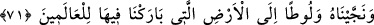
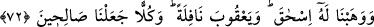
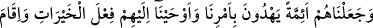
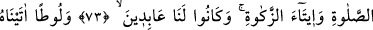
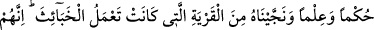
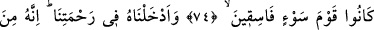
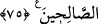

LÛT’A DA
HÜKÜM VE İLİM VERDİK
O SALİHLERDENDİ
71. Biz, onu ve Lût’u kurtararak, içinde cümle âleme bereketler verdiğimiz
ülkeye ulaştırdık.
72. Ona (İbrahim’e), İshak’ı ve fazladan bir bağış olmak üzere Ya’kub’u
lütfettik; her birini sâlih insanlar yaptık.
73. Onları, emrimiz uyarınca doğru yolu gösteren önderler yaptık ve kendilerine
hayırlı işler yapmayı, namaz kılmayı, zekât vermeyi vahyettik. Onlar, daima bize
ibadet eden kimselerdi.
74. Lût’a gelince, ona da hüküm (hakimlik, peygamberlik, hükümdarlık) ve ilim
verdik; onu, çirkin işler yapmakta olan memleketten kurtardık. Zira onlar (o
memleketin halkı), gerçekten fena işler yapan kötü bir kavimdi.
75. Onu (Lût’u) rahmetimize kabul ettik; çünkü o, sâlihlerden idi.
“Biz, onu” İbrahim’i ateşte yanmaktan ve Nemrud’un şerrinden “ve” Hz. İbrahim’in
Hârân adındaki kardeşinin oğlu olan “Lût’u kurtararak,” Irak’tan, “içinde cümle
âleme bereketler verdiğimiz ülkeye” Şam’a “ulaştırdık.”
Denilir ki: İbrahim (a.s.) ile Nemrud arasındaki hadise Irak topraklarında, Babil
sınırında Kûsâ dağında vuku bulmuştur. İşte Allah onu bu vâdîden kurtararak bereketli
kıldığı yere, Şam’a getirdi.
Süfyan’dan rivâyete göre Hz. İbrahim Şam’a gitmek üzere ayrıldığı vakit ona:
“Nereye gidiyorsun?” denildi. İbrahim (a.s.) “Torbanın bir dirheme dolduğu memlekete
gidiyorum.” diye cevap verdi.
Hakîkaten Allah Teâlâ, mukaddes toprakları berekli kılmıştır. Peygamberlerin çoğunu